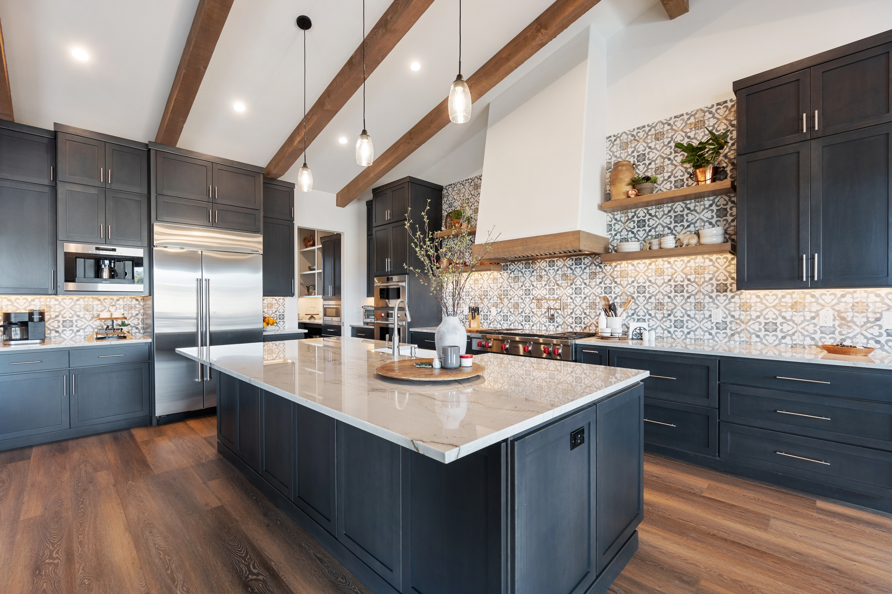
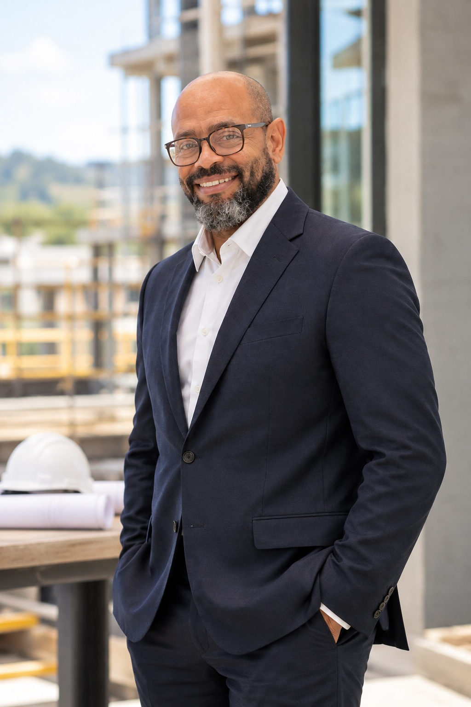
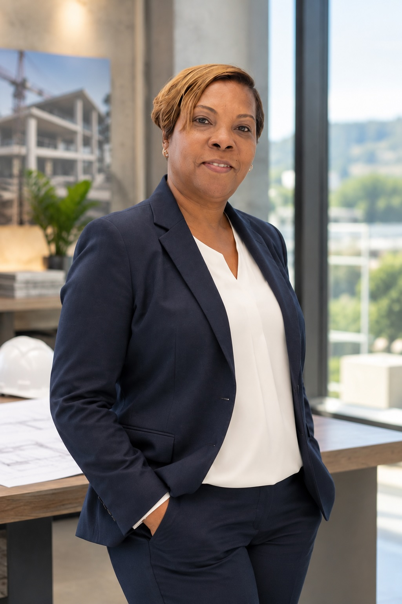
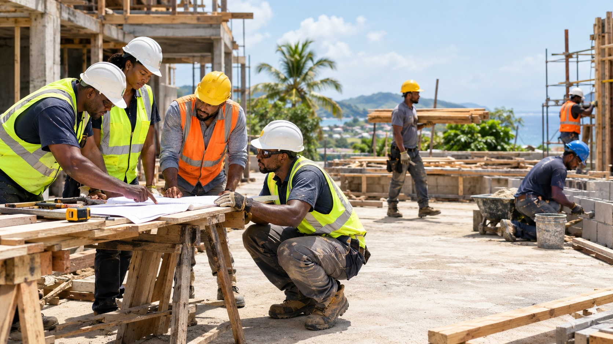

ESTABLISHED 1993 TRINIDAD & TOBAGO
Building with purpose.
Delivering with care.
Edsher Construction Limited brings more than three decades of experience to building, civil engineering, infrastructure, renovation, and project management projects.
Meet the teamExperience You Can Build On
Since 1993, Edsher Construction Limited has delivered construction and engineering work across Trinidad and Tobago. Our experience spans building construction, civil works and infrastructure, renovations and maintenance, and project management for public- and private-sector clients.

From Planning Through Delivery
We coordinate the people, resources, and technical work required at every stage of a project. Our team supports estimating, planning, procurement, site supervision, quality control, and handover, with a practical focus on safe, dependable delivery.
OUR TEAM
Our team brings together company leadership, project management, estimating, administration, and in-house trade skills. We work with clients, consultants, contractors, and suppliers from early planning through site delivery and handover, keeping communication clear and coordination practical at each stage.

Edric Murray
Director
As founder and Director, Edric leads the company and oversees its daily operations. He also carries out estimating and contributes to project management.

Sherry Ann Murray
Director / Office Manager
Sherry Ann oversees the company’s office and administrative operations. As Director and Office Manager, she helps coordinate the business and supports the day-to-day work that keeps projects and company operations moving.
The Team Behind the Work

Our skilled workforce turns plans into completed building and civil construction work. Carpenters, masons, electricians, plumbers, and labourers contribute practical expertise across project stages.
In-house technical expertise
- Carpenters
- Masons
- Electricians
- Plumbers
Our in-house capabilities include carpentry, masonry, electrical, and plumbing work, supporting delivery from the early construction stages through finishing.